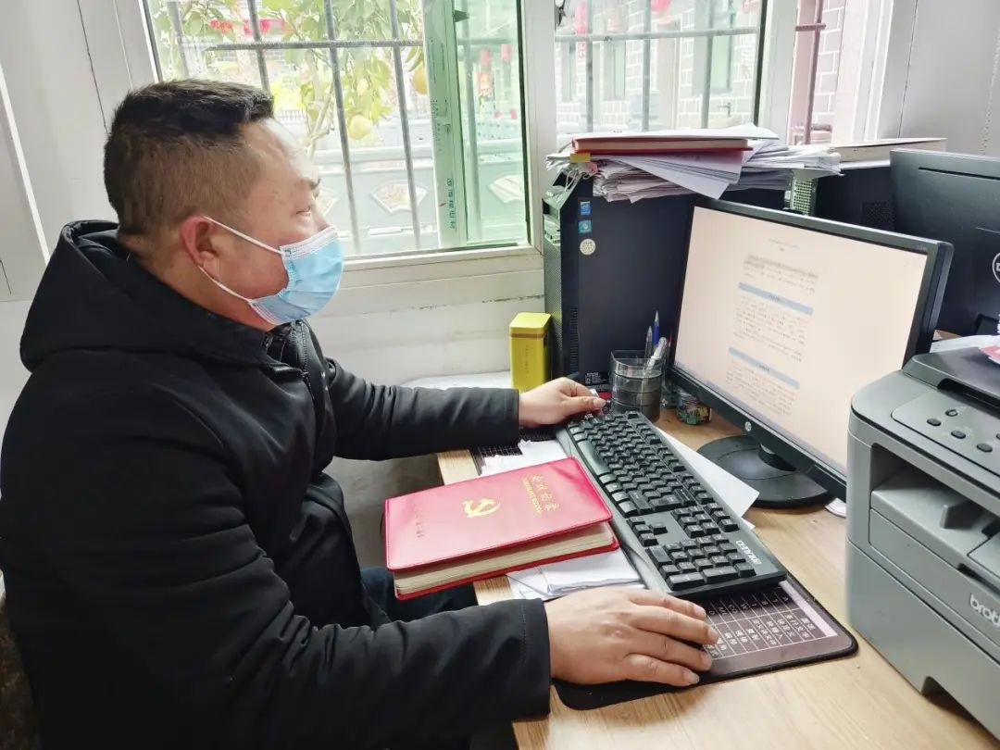
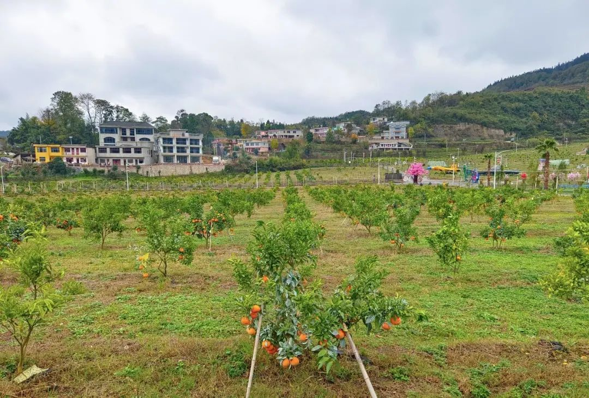
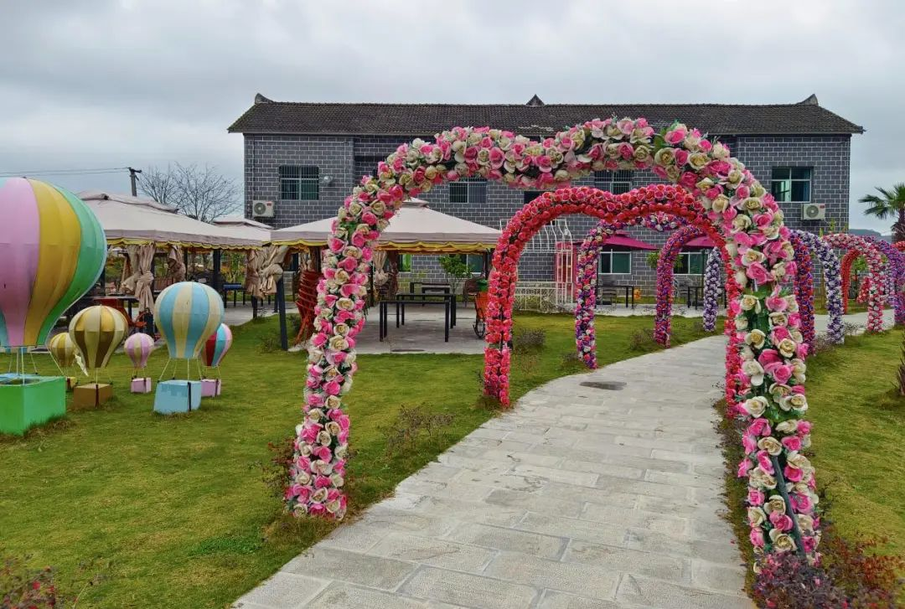
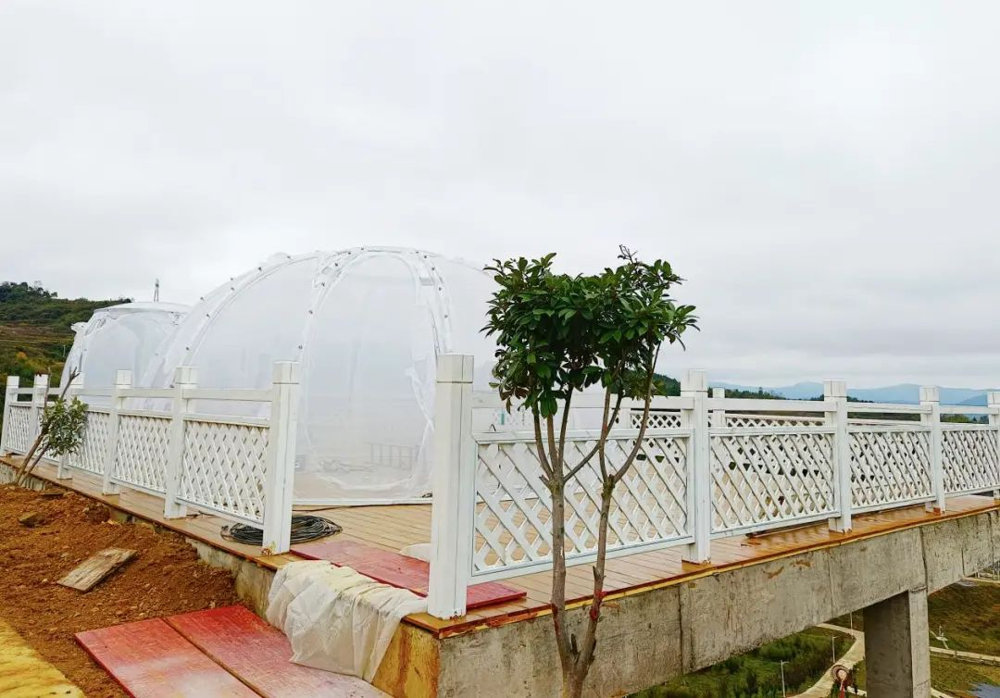

初冬时节，记者走进流长镇宋家寨村，放眼望去，农家小院错落有致，沥青道路平整宽阔，规整的田垄上，金黄色的柑橘挂满枝头……一幅绿意盎然、生机勃勃的田园美景尽收眼底。
“党的二十大报告指出，全面建设社会主义现代化国家、全面推进中华民族伟大复兴，关键在党。”在宋家寨村党支部书记宋江看来，全面推进乡村振兴，最重要的是要坚持党建引领、龙头企业带动，“积极寻求党建工作与乡村振兴的结合点。”
近年来，宋家寨村按照“支部引路、党群共富”的思路，发挥“主心骨”作用，将党的政治优势、组织优势转化为发展优势，通过整合各方力量，让党组织引领产业发展、党员冲在产业一线，群众富在产业链上。 “以前，宋家寨村基础设施差，传统种植业效益低，大部分年轻村民都外出务工。村党支部曾被列为软弱涣散党组织。”宋江说，为进一步增强党组织的创造力、凝聚力、战斗力，发挥党组织战斗堡垒作用和党员先锋模范作用，带动群众发展好产业推动乡村振兴。宋家寨村利用好党支部“三会一课”，加强对上级最新出台的方针、政策以及文件精神学习，不断提高党员干部政治和业务素质；结合实际制定了党员管理”六个一“标准和“党员积分制”等管理办法，激发党员在产业发展、乡村治理中的示范带头作用。 伴随一系列整改措施的落实，全村广大党员干部带头示范作用得到充分激发，干事创业、服务人民的能力和水平得到提升。大家积极参与到全村好人好事、产业发展、土地流转、环境保护等工作中，宋家寨村村容村貌、产业发展、乡风文明焕然一新。
2017年，宋家寨村抢抓息烽大力推动农业产业结构调整机遇，先后引进贵州堡润原生态有限责任公司和贵州狮子脑农业生态园，发展精品水果种植，打造农旅一体的田园综合体。在两家龙头企业带动下，村集体将闲置的资源、资产入股到贵州狮子脑农业生态园参与定期分红，同时村集体与贵州堡润公司合作，以“公司＋村集体＋农户”的模式发展精品水果种植。
宋江介绍，近年来，贵州堡润原、贵州狮子脑两家企业共流转土地1800余亩，涉及农户598户，为130余位村民提供务工就业，每人每月可增加务工收入1500元左右。还带动部分村民种植猕猴桃、刺梨、花椒等，全村发展果树种植1600余亩，实现了产业全覆盖。乘着产业发展的东风，宋家寨村焕发出新的活力，一跃成为全县农业产业发展、乡村旅游的“明星村”。
“深入学习贯彻党的二十大关于推进乡村振兴的决策部署，坚持农业农村优先发展，不断巩固拓展脱贫攻坚成果。”宋江说，宋家寨村将强化党建引领，全面提高基层党组织凝聚力向心力战斗力。继续抓好乡村特色产业培育壮大，持续改善农村人居环境和乡风文明，打造宜居宜业的美丽乡村，大力发展乡村旅游。进一步盘活农村闲置农房资源，鼓励村民们将闲置的农房按照公司的标准装修成名宿，并委托给公司运营，大力拓宽农户增收致富渠道。